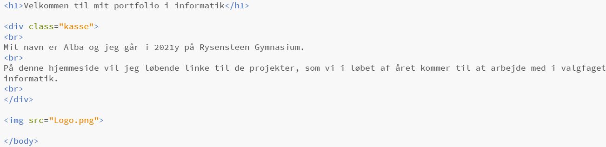
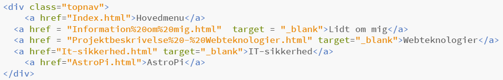

Forløb 1: Webteknologier
I dette forløb har vi lært at programmere en hjemmeside.
Herunder ses nogle af de koder jeg har brugt til at programmere/designe min hjemmeside. HTML bruges til at skabe hjemmesidens struktur (indhold såsom billeder, tekst osv.) og CSS bruges til at udsmykke/designe hjemmesiden (farve og design).
Længere nede beskriver jeg, hvad jeg har brugt de forskellige koder til.
Kode 1: Hovedmenu

Dette er koden til min forside/hovedmenu. I anden linje benytter jeg koden "div". "div" står for "Content Division element" og er en ramme for indhold - i dette eksempel en kasse.
Koden "img" gør, at man kan indsætte billeder på sin hjemmeside - den orange skrift "Logo.png" er navnet på det billede jeg har indsat.
Farver og layout laver jeg i en CSSfil.
Kode 2: Menubar

Dette er koden for menubaren. Selve menubaren designes i en CSS fil, hvor jeg har sørget for, at lave menubaren sort og links til undersider hvid, så det er muligt at se dem. Koden "href" står for "hypertext reference" og bruges til at linke til undersiderne. Det vil sige at man skal tilføje et nyt link, når der skal laves en ny underside. Denne kode indsættes i alle HTML filer for at menubaren forbliver i alle links.